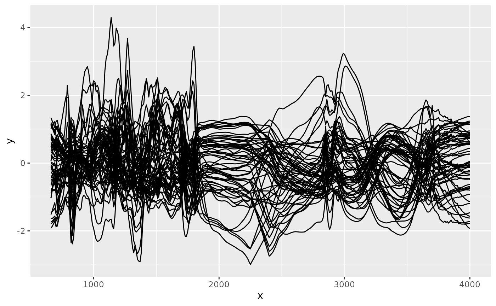

Preprocesses spectra as for the prediction of a peat property
irp_preprocess_for.RdThis function lets you extract the spectra after automated preprocessing for the prediction of a specific peat property. This allows to inspect the preprocessed spectra.
Arguments
- x
An object of class
ir. See the individual prediction models for further data requirements.- y
An object of class
irorNULL. Needed for prediction functions using more than one set of spectra (irp_microbial_nitrogen_content_1). See the individual prediction models for further data requirements. For other functions,yis not used and should be set toNULL(the default).- variable
A character vector with one or more values that define for which components contents are computed for the spectra in
x. Currently allowed values are:- "all"
irp_contentcomputes all of the values below.- "klason_lignin_content_1"
Klason lignin mass fraction [g/g] as computed by
irp_content_klh_hodgkins().- "holocellulose_content_1"
Holocellulose mass fraction [g/g] as computed by
irp_content_klh_hodgkins().- "klason_lignin_content_2"
Klason lignin mass fraction [g/g] as computed by
irp_klason_lignin_content_2().- "holocellulose_content_2"
Holocellulose mass fraction [g/g] as computed by
irp_holocellulose_content_2().- "eac_1"
Electron accepting capacity as computed by
irp_eac_1().- "edc_1"
Electron donating capacity as computed by
irp_edc_1().- "carbon_content_1"
Carbon content as computed by
irp_carbon_content_1().- "nitrogen_content_1"
Nitrogen content as computed by
irp_nitrogen_content_1().- "hydrogen_content_1"
Hydrogen content as computed by
irp_hydrogen_content_1().- "oxygen_content_1"
Oxygen content as computed by
irp_oxygen_content_1().- "phosphorus_content_1"
Phosphorus content as computed by
irp_phosphorus_content_1().- "potassium_content_1"
Potassium content as computed by
irp_potassium_content_1().- "sulfur_content_1"
Sulfur content as computed by
irp_sulfur_content_1().- "titanium_content_1"
Titanium content as computed by
irp_titanium_content_1().- "silicon_content_1"
Silicon content as computed by
irp_silicon_content_1().- "calcium_content_1"
Calcium content as computed by
irp_calcium_content_1().- "d13C_1"
\(\delta^{13}\)C values as computed by
irp_d13C_1().- "d15N_1"
\(\delta^{15}\)N values as computed by
irp_d15N_1().- "nosc_1"
The nominal oxidation state of carbon as computed by
irp_nosc_1().- "dgf0_1"
The standard Gibbs free energy of formation content as computed by
irp_dgf0_1().- "bulk_density_1"
Bulk density as computed by
irp_bulk_density_1().- "loss_on_ignition_1"
Loss on ignition as computed by
irp_loss_on_ignition_1().- "O_to_C_1"
O/C ratio as computed by
irp_O_to_C_1().- "H_to_C_1"
H/C ratio as computed by
irp_H_to_C_1().- "C_to_N_1"
C/N ratio as computed by
irp_C_to_N_1().- "volume_fraction_solids_1"
Volume fraction of solids as computed by
irp_volume_fraction_solids_1().- "non_macroporosity_1"
Non-macroporosity as computed by
irp_non_macroporosity_1().- "macroporosity_1"
Macroporosity as computed by
irp_macroporosity_1().- "saturated_hydraulic_conductivity_1"
Saturated hydraulic conductivity as computed by
irp_saturated_hydraulic_conductivity_1().- "specific_heat_capacity_1"
Specific heat capacity as computed by
irp_specific_heat_capacity_1().- "dry_thermal_conductivity_1"
Dry thermal conductivity as computed by
irp_dry_thermal_conductivity_1().- "microbial_nitrogen_content_1"
Microbial nitrogen content as computed by
irp_microbial_nitrogen_content_1().- "degree_of_decomposition_1"
Degree of decomposition as computed by
irp_degree_of_decomposition_1().- "degree_of_decomposition_2"
Degree of decomposition as computed by
irp_degree_of_decomposition_2().- "degree_of_decomposition_3"
Degree of decomposition as computed by
irp_degree_of_decomposition_3().
Value
x where the spectra now a are the preprocessed spectra which would
be used in the next step to predict the peat property indicated by
variable.
Examples
library(ir)
irp_preprocess_for(
x = irpeat_sample_data,
variable = "carbon_content_1"
) |>
plot()
#> Warning: 650 selected instead of 645.
#> Warning: 650 selected instead of 645.
#> Warning: 650 selected instead of 645.
#> Warning: 650 selected instead of 645.
#> Warning: 650 selected instead of 645.
#> Warning: 650 selected instead of 645.
#> Warning: 650 selected instead of 645.
#> Warning: 650 selected instead of 645.
#> Warning: 650 selected instead of 645.
#> Warning: 650 selected instead of 645.
#> Warning: 650 selected instead of 645.
#> Warning: 650 selected instead of 645.
#> Warning: 650 selected instead of 645.
#> Warning: 650 selected instead of 645.
#> Warning: 650 selected instead of 645.
#> Warning: 650 selected instead of 645.
#> Warning: 650 selected instead of 645.
#> Warning: 650 selected instead of 645.
#> Warning: 650 selected instead of 645.
#> Warning: 650 selected instead of 645.
#> Warning: 650 selected instead of 645.
#> Warning: 650 selected instead of 645.
#> Warning: 650 selected instead of 645.
#> Warning: 650 selected instead of 645.
#> Warning: 650 selected instead of 645.
#> Warning: 650 selected instead of 645.
#> Warning: 650 selected instead of 645.
#> Warning: 650 selected instead of 645.
#> Warning: 650 selected instead of 645.
#> Warning: 650 selected instead of 645.
#> Warning: 650 selected instead of 645.
#> Warning: 650 selected instead of 645.
#> Warning: 650 selected instead of 645.
#> Warning: 650 selected instead of 645.
#> Warning: 650 selected instead of 645.
#> Warning: 650 selected instead of 645.
#> Warning: 650 selected instead of 645.
#> Warning: 650 selected instead of 645.
#> Warning: 650 selected instead of 645.
#> Warning: 650 selected instead of 645.
#> Warning: 650 selected instead of 645.
#> Warning: 650 selected instead of 645.
#> Warning: 650 selected instead of 645.
#> Warning: 650 selected instead of 645.
#> Warning: 650 selected instead of 645.
#> Warning: 650 selected instead of 645.
#> Warning: 650 selected instead of 645.
#> Warning: 650 selected instead of 645.
#> Warning: 650 selected instead of 645.
#> Warning: 650 selected instead of 645.
#> Warning: 650 selected instead of 645.
#> Warning: 650 selected instead of 645.
#> Warning: 650 selected instead of 645.
#> Warning: 650 selected instead of 645.
#> Warning: 650 selected instead of 645.
#> Warning: 650 selected instead of 645.
#> Warning: 650 selected instead of 645.
#> Warning: 650 selected instead of 645.
#> Warning: 650 selected instead of 645.
